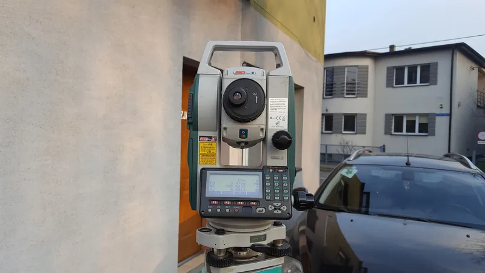
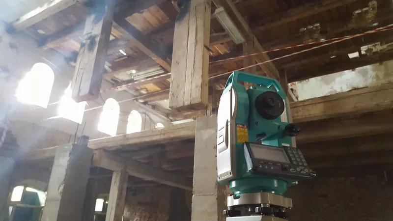
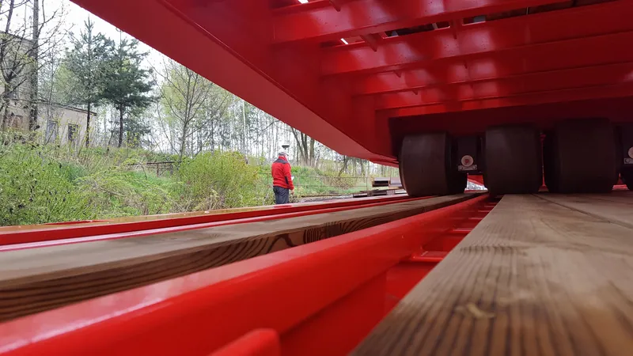
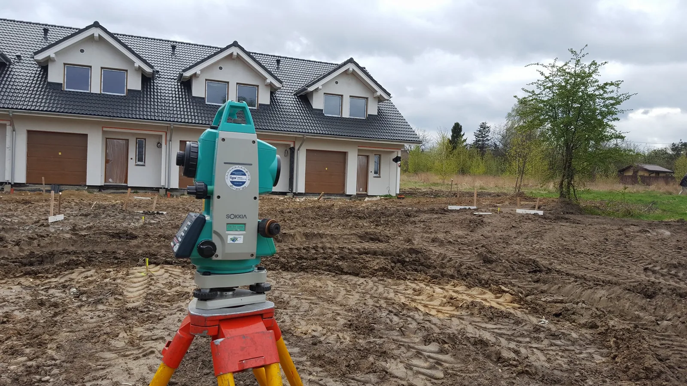
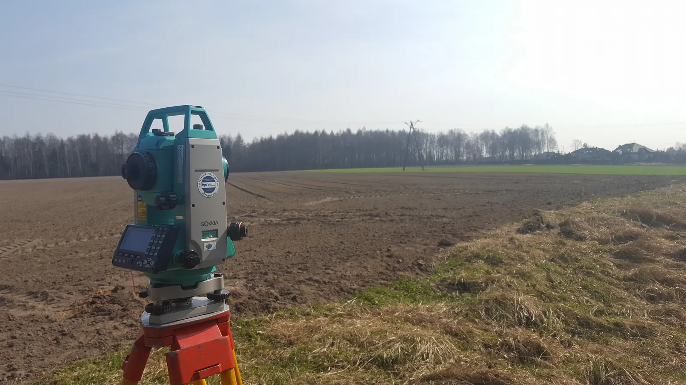
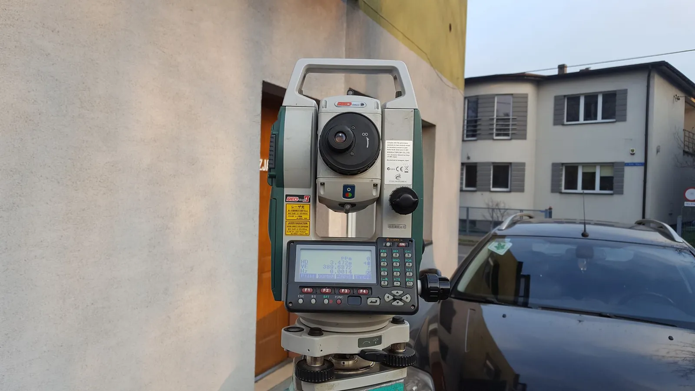
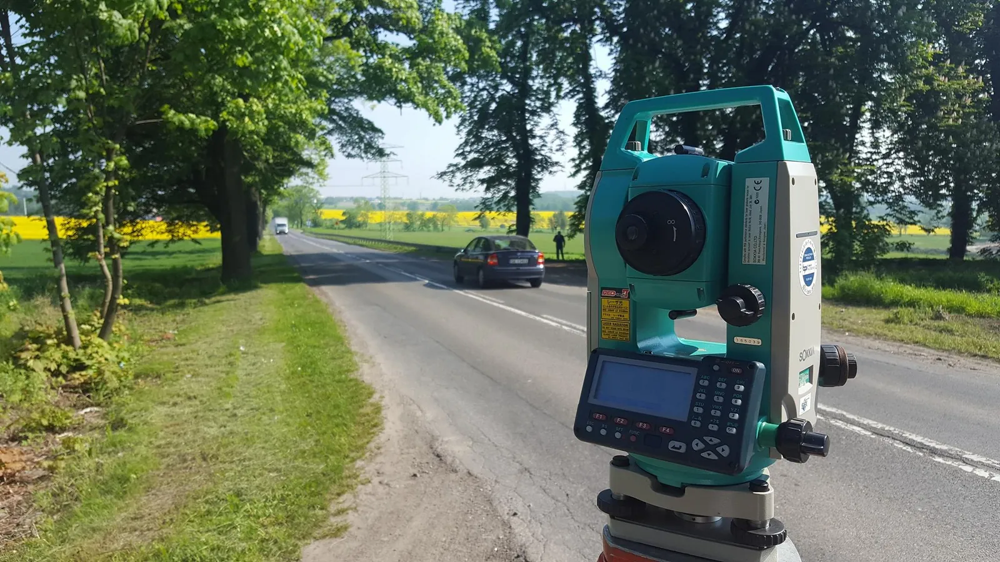
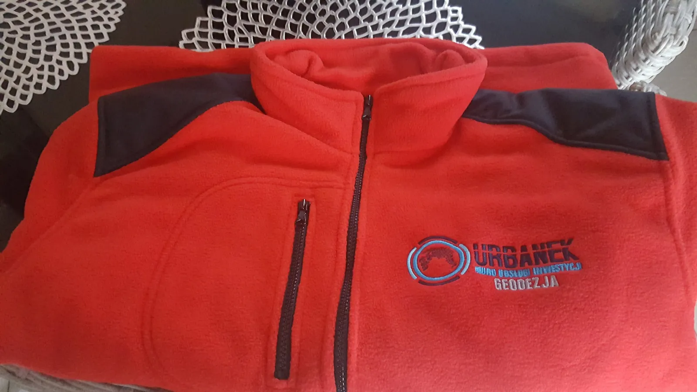

Mapy
- mapy do celów projektowych (do pozwolenia na budowę)
- mapy zasadnicze
- mapy do planowania i zagospodarowania przestrzennego
50,16964° N 18,89852° Ebiuro: ul. Żwirki i Wigury 4B, Mikołów
Geodeta w Mikołowie i Orzeszu
Mapy do celów projektowych, podziały, wznowienia granic, tyczenie budynków i inwentaryzacje powykonawcze. Biuro mamy przy Starostwie w Mikołowie.
Mierzymy dla osób prywatnych, firm i instytucji. Mapy przekazujemy w formie papierowej i numerycznej, a pomiary robimy na każdym etapie inwestycji - od działki po odbiór budynku.



Przy inwestycji pomagamy także sprzętem ciężkim. Zakres i termin ustalamy razem ze zleceniem geodezyjnym.
Powiedz, co planujesz - budowę, sprzedaż działki, podział albo spór o granicę. Doradzimy, jaki pomiar będzie potrzebny i od czego zacząć.
Zadzwoń: 503 121 121Bez wizyt w kilku urzędach i bez zgadywania, jakie papiery są potrzebne. Wystarczy telefon albo krótkie zapytanie z numerem działki.
Opisz swoją sprawęTelefonicznie albo przez formularz: adres lub numer działki i cel pomiaru. Jeśli masz mapę, wypis z rejestru gruntów albo projekt, dołącz go.
Każdą pracę wyceniamy indywidualnie, po sprawdzeniu działki i zakresu. Od razu mówimy, co będzie potrzebne.
Pracę geodezyjną zgłaszamy w ośrodku dokumentacji geodezyjnej i pobieramy dane z zasobu. Biuro jest przy Starostwie w Mikołowie.
Umawiamy termin pomiaru. Gdy sprawa dotyczy granic, zawiadamiamy właścicieli sąsiednich działek o czynnościach.
Mapę lub dokumentację dostajesz w formie papierowej i numerycznej - gotową dla projektanta, urzędu albo do odbioru budynku.
Pracujemy przede wszystkim w Mikołowie i Orzeszu oraz w miejscowościach dookoła. Biuro przy ul. Żwirki i Wigury, obok Starostwa, to punkt wyjścia do każdego pomiaru w powiecie mikołowskim.
Działka poza tą listą? Zadzwoń - powiemy od razu, czy dojedziemy.





Geodezją i kartografią zajmujemy się od 2001 roku. Zespół tworzy trzech geodetów z wyższym wykształceniem, a przy większych inwestycjach współpracujemy z projektantami.
Mierzymy dla osób prywatnych, firm i instytucji: od mapy pod jeden dom po obsługę całej budowy. Nowoczesną aparaturę pomiarową kupiliśmy w ramach projektu współfinansowanego z Regionalnego Programu Operacyjnego Województwa Śląskiego.
Opisz krótko sprawę i dołącz to, co masz - mapę, wypis, projekt albo zdjęcie dokumentu. Oddzwonimy z wyceną i terminem.
Biuro Obsługi Inwestycji Piotr Urbanek
ul. Żwirki i Wigury 4B
43-190 Mikołów
centrum, przy Starostwie
503 121 121 Michał Urbanek 501 592 148 Piotr Urbanek agromiar@o2.pl
Wyznacz trasę